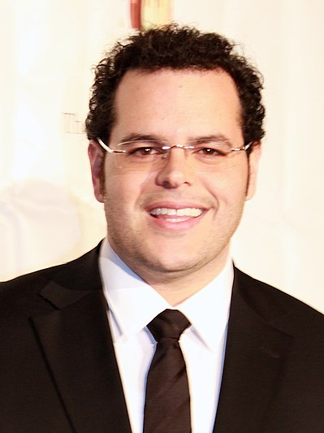

Geboortedatum: 23 feb
Biografie:
Gad werd geboren in Hollywood en werd joods opgevoed, zijn vader was een immigrant uit Afghanistan. Hij doorliep de high school aan de University School of Nova Southeastern University in Fort Lauderdale waar hij in 1999 zijn diploma haalde. Hierna haalde hij in 2003 zijn bachelor of fine arts in drama aan de Carnegie Mellon College of Fine Arts in Pittsburgh. Tijdens zijn studie nam hij voor een semester deel aan een uitwisselingsprogramma met de National Institute of Dramatic Art in Sydney.
Gad begon in 2002 met acteren in de film Mary and Joe, waarna hij nog meerdere rollen speelde in films en televisieseries.
Gad is in 2008 getrouwd waaruit hij twee kinderen heeft.
Filmografie
- Artimis fowl (2020)
- Frozen II stemacteur(2019)
- The angry birds movie 2 stemacteur (2019)